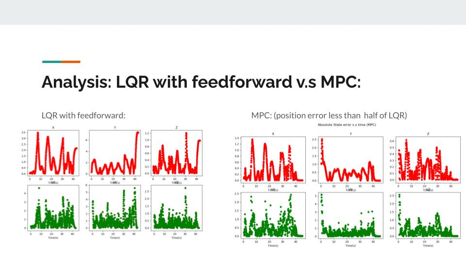

Red reference trajectory, Blue
MPC predicted trajectory, Green spline
Red reference trajectory, Blue
MPC predicted trajectory, Green spline
In top-5 among 46 projects in the course @ CMU 11-785 - Introduction to Deep Learning (Fall 2020) - Project Gallery
Intro
Drone racing involves navigating a small quadcopter through a series of gates at high speeds, often requiring highly dynamic flight and careful consideration of the constraints presented by the drone gates themselves. In this work, we present an approach to generate optimal minimum-snap reference trajectories given only the positions and orientations of the gates. We also present a controller based on state-feedback linearization and MPC in order to track these trajectories in real-time.
Minimum Snap Trajectory Generation
To generate reference trajectories for MPC to follow, we build on minimum snap trajectory generation. Snap, the fourth derivative of position, is minimized as it indirectly minimizes angular velocity inputs. We parameterize trajectories as fifth order piecewise polynomials parameterized by time. To define the Quadratic Programming (QP) problem, we enforce constraints for state derivatives, continuity, and direction at key waypoints to the trajectory.
Flat-System Dynamics
Differential flatness is a property that allows a nonlinear system to be separated into a linear system and a nonlinear transformation mapping between the two systems [11]. We exploit the differential flatness property of quadcopter dynamics to apply feedback linearization on the nonlinear dynamics, enabling us to solve a linear, transformed system for the optimal controls.
LQR vs MPC
The figure above shows how applying feedforward input given a future time horizon helps the drone handle sharp turns well. The LQR controller here would simply attempt to follow the current immediate reference pose using feedback error from the previous timestep. In the main image at the top, the LQR controller causes the drone to undershoot the turn completely.

Alvin Shek
Robotics Masters Student @ CMU
Robotics, Computer Vision, Deep Learning, Reinforcement Learning.